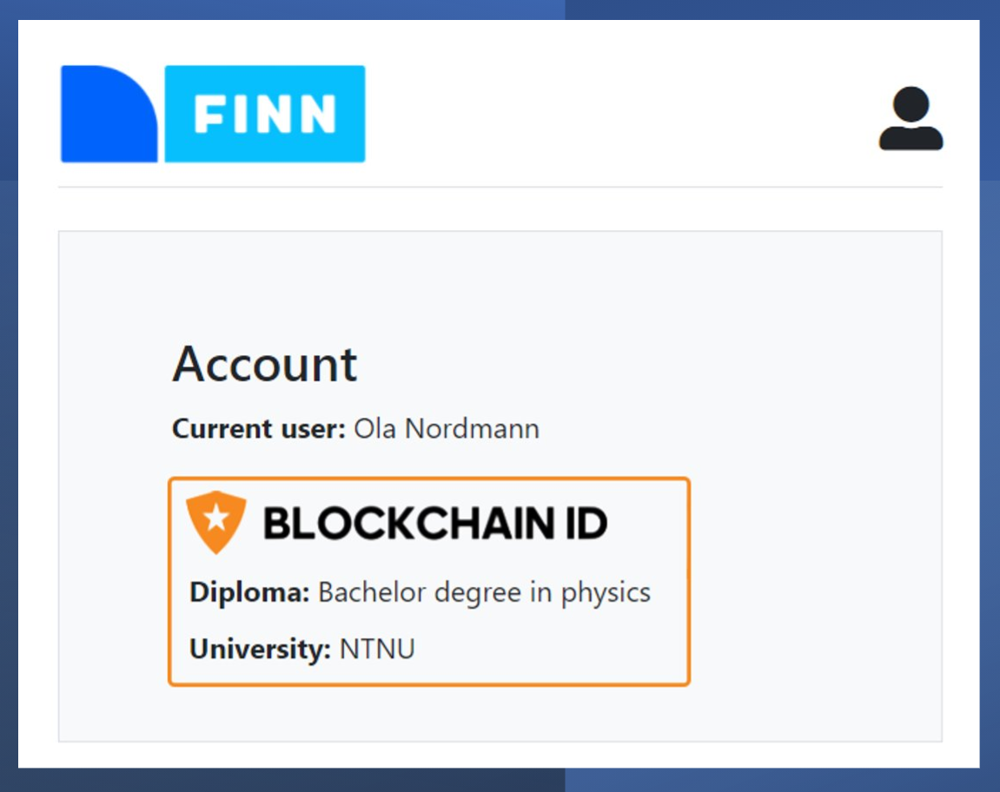

This is a demo of self sovereign identity using blockchain.
You can create credentials at an issuer (university) and verify them (hiring website).
The demo uses a testnet (Matic mumbai) which is built with Etherium.
Smart contacts are used to verify the credentials and store them on chain.
Try it yourself, all steps are free!
This demo uses blockchain to sign smart contracts and perform transactions
For this to work properly you will need to setup a blockchain wallet.
Don't worry we will go trough the steps here, this takes less than 2 minutes.
Congratulations! 🥳
You will now shortly (1-2) minutes have some test MATIC coins you can use in the demo.
Here comes the fun part, creating and verifying credentials on a real blockchain!
The demo is divided into two steps: creating and verifying your credentials.
For the first part of the demo you are going to sign a university diploma.
Enter your name in the page and click "Connect diploma to Blockchain ID"
Click the green Upload to Blockchain ID button and press Confirm in the popup window.
Visit university diploma demo.
After you have signed the diploma it is now uploaded to the blockchain.
Imagine you are job hunting and want to prove you have a diploma.
In the next step we will verify your diploma on the job listing site using your wallet
Click the green sign in with Blockchain ID button to fetch your diploma stored in the blockchain.
Visit job listing verifier demo

All code is available at GitHub here
This demo is a part of our Bachelor assignment (Jesper Hustad & Fredrik Julsen) at NTNU.
The site is hosted with Heroku, server is running with Express (NodeJS), using Truffle for blockchain interactions
The smart contract is written in solidity and looks like this:
contract Verifier {
event Credentials(address signer, string description);
function createCredentials(string memory _description, uint8 v, bytes32 r, bytes32 s) public {
bytes32 message = keccak256(abi.encodePacked(_description));
address signer = ecrecover(message, v, r, s);
emit Credentials(signer, _description);
}
}